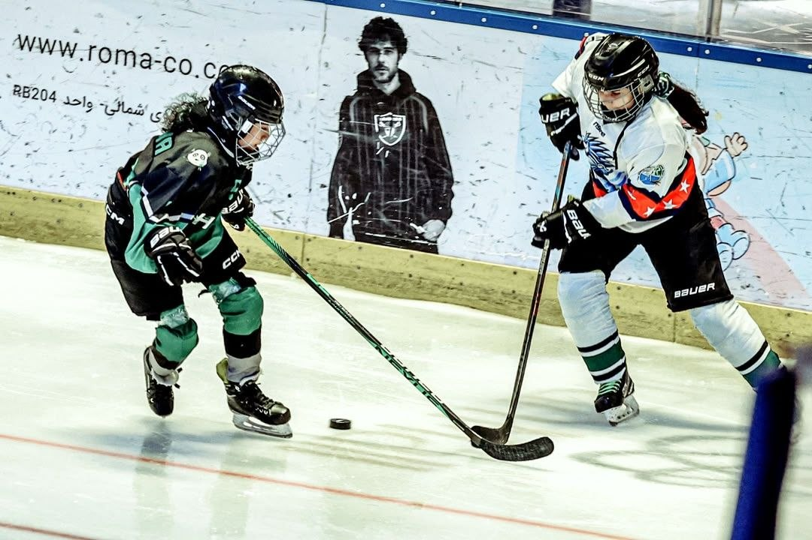
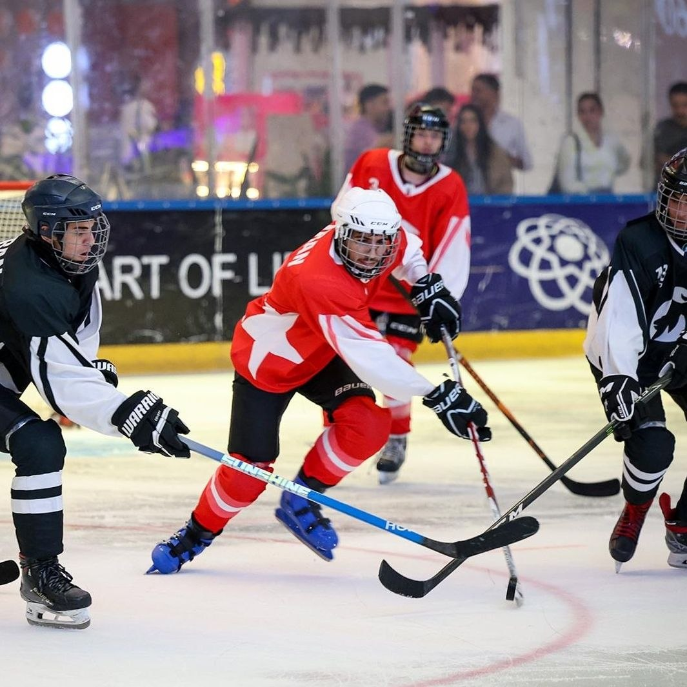
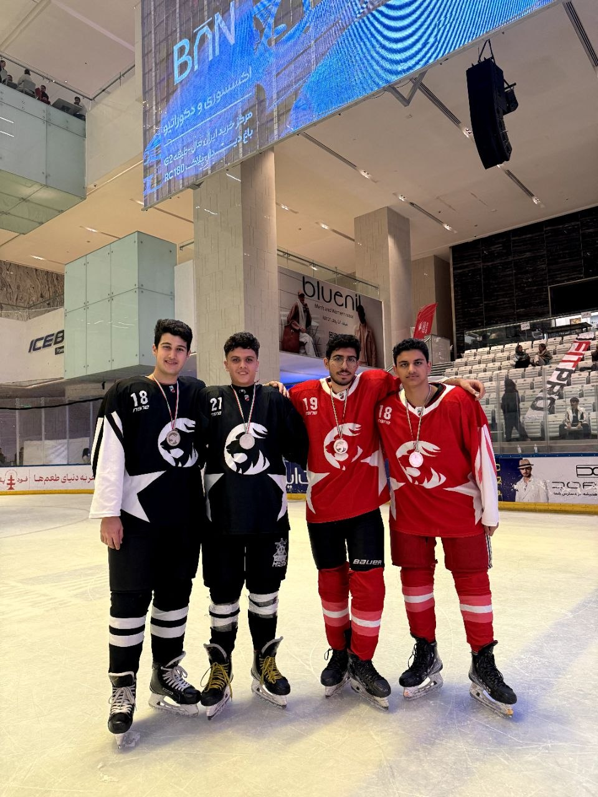

تیمهای ما،
داستانهای ما.
اینجا خانهی تیمهای پیشروست؛ هر تیم یک صفحه اختصاصی دارد تا اعضا، سابقه فعالیت، سن، پست و مشخصات بازیکنانش را ثبت و مدیریت کنی.
از ۲۰۲۴
HOCKEY CLUB2024
تیم را انتخاب کن،
بازیکنها را بساز.
روی هر کارت بزن تا وارد صفحه اختصاصی همان تیم شوی. در صفحه تیم میتوانی برای تکتک بازیکنان عکس، سن، سالهای فعالیت، شماره پیراهن و مشخصات کامل ثبت کنی.
 ۰۱INLINE
۰۱INLINEببرهای کوچک
اولین قدمها روی پیست، با بازی، تعادل و ساختن اعتمادبهنفس.
ورود به صفحه تیم ←
۰۲JUNIORنوجوانان پیشرو
ترکیب سرعت، تکنیک و تصمیمگیری برای بازیکنانی که جدیتر تمرین میکنند.
ورود به صفحه تیم ← ۰۳WOMEN
۰۳WOMENبانوان پیشرو
یک تیم پرانرژی برای رشد، رقابت سالم و ساختن خاطرههای بزرگ.
ورود به صفحه تیم ← ۰۴ADULT
۰۴ADULTتیم بزرگسالان
تمرین منظم سالن، آمادگی بدنی و تجربه بازی در فضای رقابتی.
ورود به صفحه تیم ←
۰۵PRO / ICEمسیر قهرمانی
برای بازیکنانی که هدفشان فراتر از تمرین است؛ پیشرفت، انتخاب و آمادهسازی مسابقه.
ورود به صفحه تیم ←بازی فقط
روی یخ نیست.
از اولین جلسه روباز تا لحظههای قهرمانی، مسیر پیشرو با آدمها و خاطرههای واقعی ساخته میشود.



فهرست تیمها
با مدیریت پیشرو.
همه اطلاعات تیمها و بازیکنان توسط ادمین پیشرو هاکی مدیریت و بهروزرسانی میشود. برای مشاهده فهرست عمومی، تیم موردنظر را انتخاب کنید.